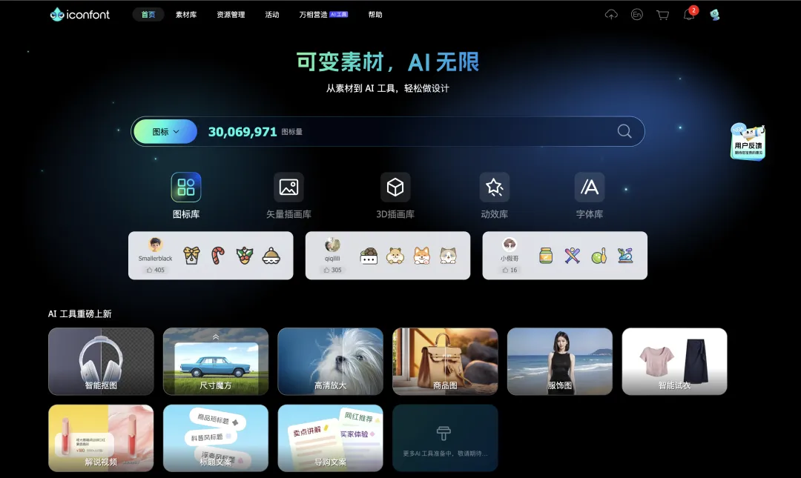
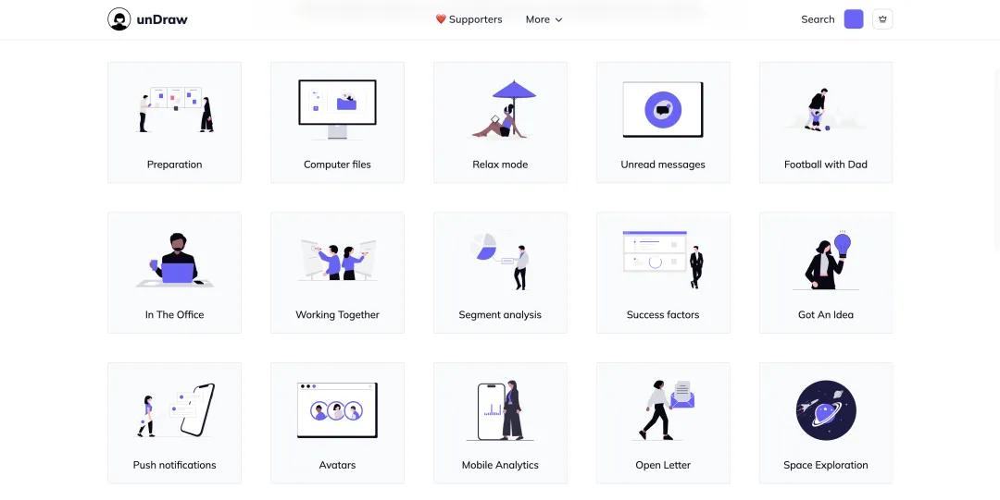
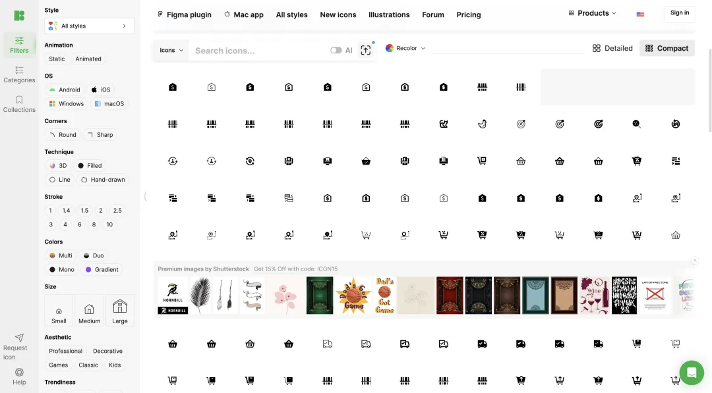

一. iconfont
最常用的图标站，阿里巴巴出品。
提供了成千上万的矢量图标，涵盖 UI 设计、APP、网页等多个领域。
用户可以创建自己的项目，批量管理所需图标，方便在不同项目中复用。
支持多种使用方式。
支持多人协作。
二. unDraw
unDraw 是一个提供开源插画资源的平台。
提供的所有插画均为免费开源，用户可在个人或商业项目中自由使用，无需署名。
可以更换喜欢的颜色主题后再下载。
插画涵盖多种主题，如技术、教育、医疗等。
支持 png 或 svg 使用方式。
界面简洁，这种网站我很喜欢！
https://undraw.co/illustrations
三. Icons8
Icons8 提供超过 10 万个图标，这个数量是真的多！
分类清晰明确。
用户可在线调整图标的颜色和大小。
支持多种使用方式。
除图标外，Icons8 还提供插图、3D 模型、照片和音乐等资源，满足多元化的设计需求。
